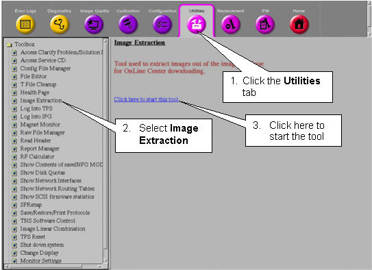
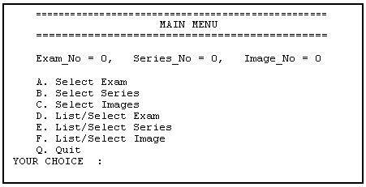
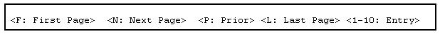
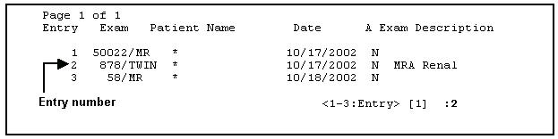
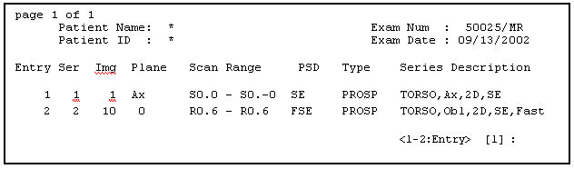
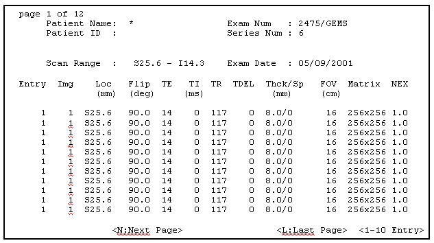
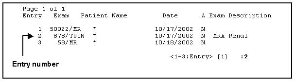
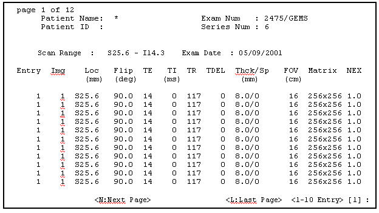

Proprietary to General Electric Company
Direction 5440000, Rev# 5
Signa HDxt Service Methods
Module Version 1.0, Version Date 4/25/07
Proprietary to General Electric Company |
| Required Persons | Preliminary Reqs | Procedure | Finalization |
|---|---|---|---|
| 1 | Not Applicable | 15 mins | Not Applicable |
This document describes the procedure for extracting images from the image database for OnLine Center downloading.
In the Service Desktop Manager, click on the [Service Browser] button.
Follow the instructions on Illustration 1, below.
Illustration 1: Starting the Image Extraction Tool

In the winterm window, you’ll be prompted to type the InSite password. Type <2getin> (in either upper- or lowercase), then press <Enter>. Note that the password will not appear on the screen as you type.
The Main Menu appears in a winterm window. Refer to Illustration 2.
Illustration 2: Image Extraction Main Menu

Main Menu options allow you to enter Exam, Series and Image numbers if you know them, or, if you’re not certain about the numbers, you can select them from a list.
If you know the number of the Exam, Series and Image you want to view, follow the Selecting an Exam, Series and Image(s) by Number procedure in Selecting an Exam, Series and Image(s) by Number
If you’re not sure of the numbers, but can identify the Exam, Series and Image by details or descriptions stored in the database, follow the Selecting an Exam, Series or Image from a List procedure in Selecting an Exam, Series or Image from a List.
| NOTE: | Regardless of the extraction method you use, you can still select an Exam, Series or Image(s) from a list if any of the numbers you enter are not in the database. You must select the items in this order: Exam, then Series, then Image(s). |
Below are some navigational aids.
To make selections from the menus, the pointer must be within the winterm window.
Only ten items (exams, series or images) can be displayed at once. To display the next ten items, use the navigational keys at the bottom of the screen:
Illustration 3: Navigational Keys

If you’re in a submenu (e.g., the Series menu) and you want to return to the previous menu, type <Q> at the prompt and press <Enter>.
If you’re at the Main Menu, type <Q> to return to the Service Browser.
Use this procedure if you know the exam, series and image numbers you’re looking for. If you enter a number that doesn’t exist in the database, the system will display a menu of all entries from which to choose.
To select an exam by number, on the Main Menu, type <A> (in upper- or lowercase) and press <Enter>.
At the prompt Exam No. ?, type the exam number you want to view. Press <Enter>.
If you typed an existing exam number, the Main Menu will reappear. Go to step 3.
If you typed an exam number that doesn’t exist in the database, the Exam Menu will appear, from which you can select an Entry number. See the example in Illustration 4.
Illustration 4: Exam Menu

On the Exam menu, type the Entry number (not the exam number) preceding the desired exam, then press <Enter>. When the Main Menu reappears, go to step 3.
To select a series by number, on the Main Menu, type <B> and press <Enter>.
At the prompt Series No. ?, type the series number (in the previously-selected exam) that you want to view. Press <Enter>.
If you typed an existing series number, the Main Menu will reappear. Go to step 5.
If you typed a series number that doesn’t exist in the database, the Series menu will appear, from which you can select an Entry number. See the example in Illustration 5.
Illustration 5: Series Menu

Type the Entry number (in the first column) that precedes the series you’d like to view, then press <Enter>. Go to step 5.
To select an image or images by number, on the Main Menu, type <C> and press <Enter>.
When the prompt Image No ? appears, you’ll also see this message:
Type in the start image number and end image you want to copy with a space in between.
To select more than one image, you can enter a range of images separated by a space.
For example, to select images 81, 82, 83 and 84, enter 81 84. To select a single image (e.g., image 7), type 7 7.
| NOTE: | A range of images must be consecutive (for example, 1 to 10, or 256 to 300). You can only select a range of image numbers from option C. Select Images. If you select option <F>. List/Select Image, you’ll have to choose the images one at a time. |
If you typed an existing image number (or range of numbers), go to step 6.
If you typed an image number or range that doesn’t exist in the database, the Image Menu will appear, from which you can select an Entry number. See the example in Illustration 6.
Illustration 6: Image Menu

If you want to select a range of images, you won’t be able to do it from this menu; you can only select a range from the Image No.? prompt.
Instead, make note of the existing image numbers, then return to the Main Menu (by typing< Q> at the Entry prompt) until the Main Menu reappears. Select <C> Select Images, then press <Enter>. Finally, type the correct range (e.g. 14 19) and press <Enter>.
After you’ve selected an image or a range of images, a message similar to this will appear:
The image file will be copied to /usr/g/insite/bin/gzip/e50022s1i8 It will then be compressed with /usr/g/insite/bin/gzip
The compressed image file is then copied to the directory /usr/g/insite/tmp. Below is the system naming convention for extracted images.
Illustration 7: Naming Convention for Extracted Images

If the image(s) you selected already exist(s) in the /usr/g/insite/tmp directory, you’ll see a message like this:
Gzip: /usr/g/insite/tmp/e50022s1i8.gz already exists; do you wish to overwrite (y or n)?
Type< y> to overwrite the existing image or <n> to cancel the overwrite.
If the list contains more than ten items, use the navigational keys at the bottom of the screen to move between “pages.” See Illustration 3.
| NOTE: | The tmp directory will be purged periodically, so if you need to view an extracted image that’s been in the tmp directory for a few days, you may have to re-extract it. |
If you’d prefer to select the exam, series or image from a list of all entries in the database, follow the procedure below.
To select an exam from a list, on the Main Menu, type <D> (in upper- or lowercase) and press <Enter>. Refer to Illustration 2.
| NOTE: | The Exam_No, Series_No and Image_No at the top of the menu display the numbers of the currently selected items. A zero (0) indicates that there is no current selection for that item. |
A list of the exams in the database is displayed, as shown in Illustration 8.
Illustration 8: Exams in the Database

Each Exam number is preceded by an Entry number. At the prompt, enter the Entry number preceding the exam you’re looking for (not the number of the exam itself). Then press <Enter>.
If the list contains more than 10 items, use the navigational keys at the bottom of the screen to move between “pages:” See Illustration 3.
Be sure the pointer is within the winterm window, then type the letter <N >to go to the next page, <P> to go to the prior page, etc.
When the Series Menu appears, select the Entry number of the series (the second column, labeled Ser) you want to view. Then press <Enter>. See Illustration 9.
Illustration 9: Series Menu

| NOTE: | When a menu of images is displayed (see Illustration 10), you cannot choose a range of images (for example, 5 10). You can only select them one at a time from the Image menu. See step 9, below, for details on selecting a range. |
When the Image Menu appears, type the Entry number of the image you want to view. Press <Enter>. See <Illustration 10>.
Illustration 10: Image Menu

If there are multiple “pages” of images, go to the next page by positioning the pointer anywhere in the winterm window, then type <N> and press <Enter>.
Other navigational keys, displayed below the menu, will allow you to move forward, backward, to the beginning and end of the list of images. See Illustration 3.
To select a single image, type the number in the Entry column that precedes the image you want. Press <Enter>.
A message similar to this one will appear:
The image file will be copied to /usr/g/insite/bin/gzip/e58s1i2 It will then be compressed with /usr/g/insite/bin/gzip
If the image already exists in the /usr/g/insite/tmp directory, you’ll see a message like this:
Gzip: /usr/g/insite/tmp/e50022slil.gz already exists; do you wish to overwrite (y or n)?
If you want to overwrite the existing file, type <Y>; if not, type <N>. Press <Enter>.
To select a consecutive range of images:
Return to the Main Menu by typing <Q> at the Entry prompts.
At the Main Menu, type <C >(Select Images).
The prompt Image No ? appears with this message:
Type in the start image number and end image you want to copy with a space in between.
Type the first image number and the last image number, separated by a space.
For example, to select images 81, 82, 83 and 84, enter 81 84. To select a single image (e.g., image 7), type 7 7.
The message below will be repeated for each image you selected. The filenames are composed of the <e>xam, <s>eries and <i>mage numbers. This message appears:
The image file will be copied to /usr/g/insite/tmp/e58s1i3 It will then be compressed with /usr/g/insite/bin/gzip
| NOTE: | The tmp directory will be purged periodically, so if you need to view an extracted image that’s been in the tmp directory for a few days, you may have to re-extract it. |
If necessary, type <Q> at the current menu (Exam, Series or Image) and press <Enter> until you return to the Main Menu.
At the Main Menu, type <Q> and press <Enter>to return to the Service Browser.
No finalization steps.